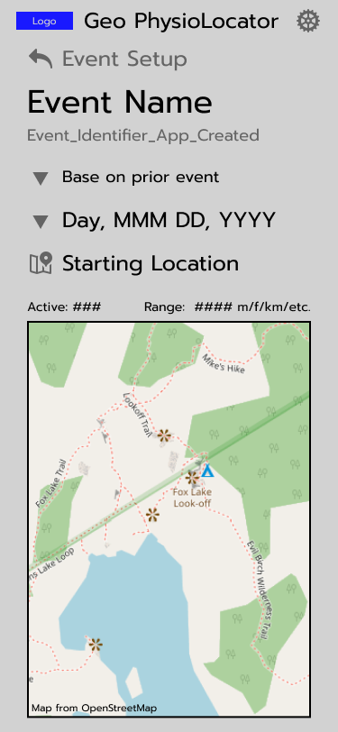
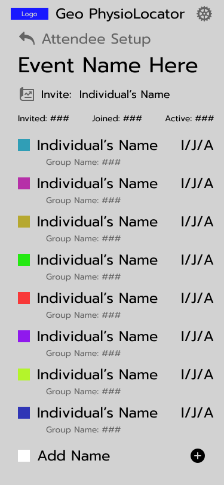
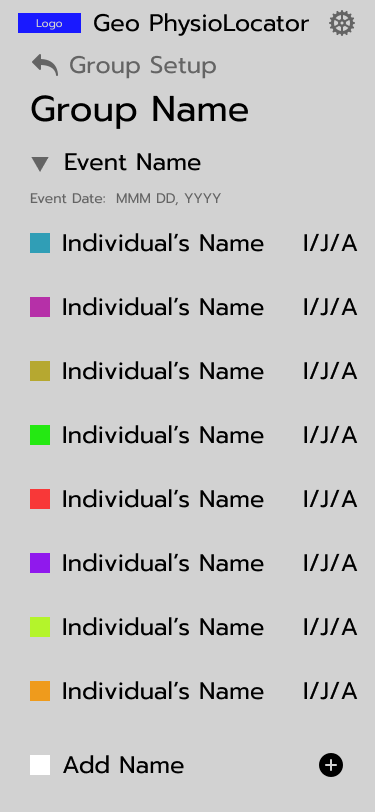
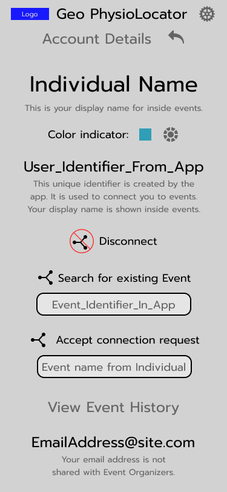
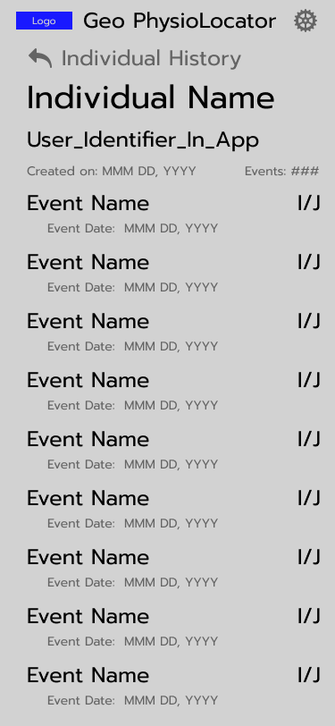
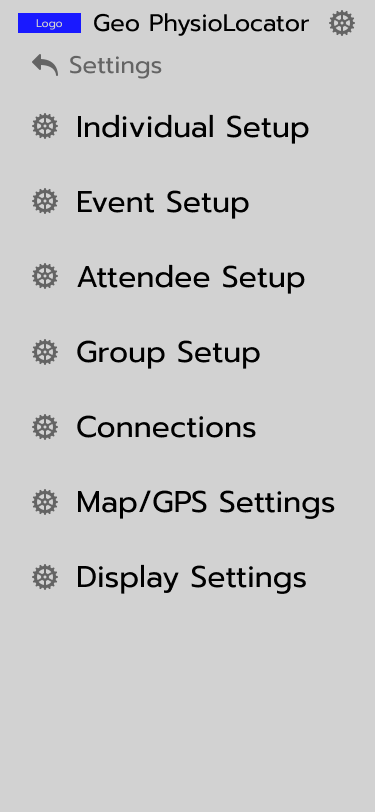

Group PhysioLocator
This app is in intended as a tool for temporarily tracking a group of people. Potential applications include GSAR, youth groups, cleanup groups, and friends at events.
App Benefits
- Allow phone-to-phone connections when cell service is not available.
- Secure messaging between phones.
- Retrieve and save map data on the device or use GPS location.
- Verification in process: When cell service is not available, relational distance may be estimated when at least four users are in range of each other.
Future Considerations
- Scale tool overlay for photos
- Trig calculations for navigation and scale
- Secure photo sharing
- Option intended for GSAR use. Event photo control where photos are removed from devices and screenshots are disabled; approval for permissions required on event attendee's phone.
UI Design
General Decisions
The font is a sans font using various sizes for readability. Priority text is black while gray is used for lower priority items. The contrast is accessible for all colors.
Menu and button placement are arranged using the 'primary left' rule. This is easier on the phone, uses less eye movement, and can allow for one-handed access.
Icons are typically a gray 30 px image with 48 px spacing. The phone and chat icons are black due to their high priority. Lower priority icons are 20 px with the 48 px spacing.
Figma
Active Screen

This is the primary screen with a map along with messaging and a button to call the active selection.
Selections are available for the map, messaging, and call functions and can include an individual, group, or all participants. At the top of this screen are the total active participants and their range, using units set in the device settings. The pinged line indicates a direct message sent by an individual to the users. The arrow moves the name into the active selection field. The chat field will scroll, including the individuals indicated in the Selection field. Tapping on the keyboard icon will open an overlay with the chat field and a keyboard.
Other Screens
UI design for event setup screen
{kind=link}
UI design for inviting attendees to the event
{kind=link}
UI design for arranging attendees into groups
{kind=link}
UI design for setting up the individual user
{kind=link}
UI design for a user viewing their event history
{kind=link}
UI design for the settings screen
{kind=link}